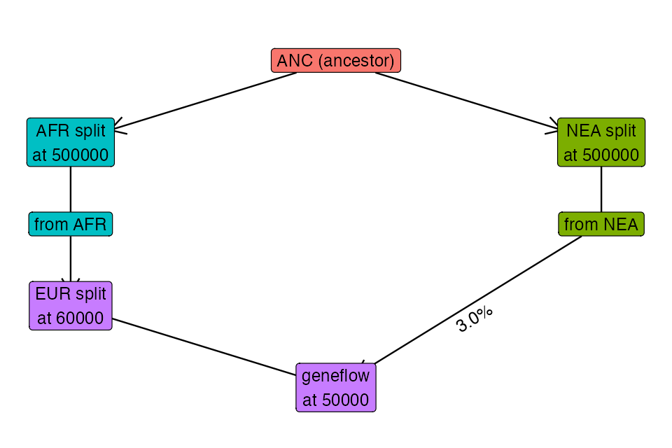

vignettes/vignette-05-tree-sequences.Rmd
vignette-05-tree-sequences.RmdIn this vignette, we will show how to specify sampling events to record individuals in the tree-sequence output file (a procedure which is called “remembering” of individuals in the SLiM/tskit context). We will demonstrate this feature on a simple model of Neanderthal introgression into the ancestors of non-African individuals.
NOTE: This vignette is actively being developed, which is why the population sizes are so extremely small.
library(slendr)
anc <- population("ANC", time = 5e6, N = 10)
neand <- population("NEA", parent = anc, time = 500e3, N = 3, remove = 40e3)
afr <- population("AFR", parent = anc, time = 500e3, N = 10)
eur <- population("EUR", parent = afr, time = 60e3, N = 5)
gf <- geneflow(from = neand, to = eur, rate = 0.03, start = 50000, end = 45000)
model <- compile(
populations = list(anc, neand, afr, eur), geneflow = gf,
generation_time = 30,
dir = file.path(tempdir(), "neand-introgression"), overwrite = TRUE
)Here’s our simple model visualized as a graph:

We have defined a model. How do we sample data from it? Ideally, we would like to be able to schedule sampling events at a given time, sampling a defined number of individuals from a given population.
For your convenience, slendr provides a function sampling() which allows you to define such sampling schedule automatically, while at the same time, enforce that only populations which are already (i.e. after their appearance in the simulation) or still (before they are removed from the simulation) will be sampled from.
In our example, we want to sample two Neanderthal individuals (the older one being the Altai Neanderthal, then younger one Vindija Neanderthal):
neand_inds <- sampling(times = c(70000, 40000), list(neand, 1))
neand_inds
#> # A tibble: 2 x 3
#> time pop n
#> <int> <chr> <int>
#> 1 70000 NEA 1
#> 2 40000 NEA 1Next, we want to sample of present-day individuals—an “ancestor” representing a chimpanzee outgroup, and a couple of Africans and Europeans:
present_inds <- sampling(times = 0, list(anc, 1), list(afr, 20), list(eur, 20))
present_inds
#> # A tibble: 3 x 3
#> time pop n
#> <int> <chr> <int>
#> 1 0 ANC 1
#> 2 0 AFR 20
#> 3 0 EUR 20As you can see, the sampling() function returns a plain old data frame with a very simple structure (columns time, population name, number of individuals). This means that you can define sampling events using whatever input data you might already have available (such as radiocarbon-dated historical samples).
For instance, a paper by Petr et al. examined the impact of ancient geneflow between Eurasian populations (known to carry Neanderthal ancestry) and African populations (assumed to carry no Neanderthal ancestry) on the inference of Neanderthal ancestry proportions in Eurasians. Specifically, because African genomes are routinely used to estimate Neanderthal ancestry in non-Africans they were interested in knowing how do traces amounts of Neanderthal ancestry present in Africans today resulting from past geneflow between Eurasians and Africans affect the statistical inference.
The table of radiocarbon ages of early modern human (EMH) ancient DNA data points is available online. The only thing we have to do is reformat it so that it is in the same format as the data frames produced by the sampling() function:
emh_inds <- readr::read_delim(
"https://raw.githubusercontent.com/bodkan/nea-over-time/master/data/emh_ages.txt",
delim = " ", col_names = c("name", "time")
)
emh_inds
#> # A tibble: 51 x 2
#> name time
#> <chr> <dbl>
#> 1 UstIshim 45020
#> 2 Oase1 39610
#> 3 Kostenki14 37470
#> 4 GoyetQ116-1 34795
#> 5 Muierii2 33300
#> 6 Paglicci133 32895
#> 7 Cioclovina1 32435
#> 8 Kostenki12 32415
#> 9 KremsWA3 30970
#> 10 Vestonice13 30870
#> # … with 41 more rows
emh_inds$pop <- "EUR"
emh_inds$n <- 1
emh_inds <- emh_inds[, c("time", "pop", "n")]
head(emh_inds)
#> # A tibble: 6 x 3
#> time pop n
#> <dbl> <chr> <dbl>
#> 1 45020 EUR 1
#> 2 39610 EUR 1
#> 3 37470 EUR 1
#> 4 34795 EUR 1
#> 5 33300 EUR 1
#> 6 32895 EUR 1One nice feature of the sampling() function is that it only schedules sampling events for populations if that population is present in the simulation at a given time. This makes it possible to simply specify the whole time range for sampling, specify all populations and sizes of the samples, and let the function generate sampling events only for populations present at each time. If for some reason a stricter control over sampling is required, this behavior can be switched off by setting strict = TRUE like this:
# this attempts to sample a Neanderthal individual at a point when Neanderthals
# are already extinct, resulting in an error
sampling(times = 10000, list(neand, 1), strict = TRUE)Error: Cannot schedule sampling for 'NEA' at time 10000 because the population will not be present in the simulation at that point. Consider running this function with `strict = FALSE` which will automatically retain only keep valid sampling events.Now that we already have the model object ready, we can simulate data from it, sampling individuals according to our sampling schedule. We do this by calling the slim() function as usual, but this time we set ts_recording = TRUE (switching of tree-sequence recording in SLiM) and we specify the sampling events with the sampling = argument. Note that we bind the individual sampling schedule data frames using the rbind function provided by base R: